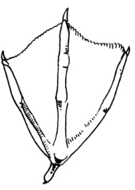
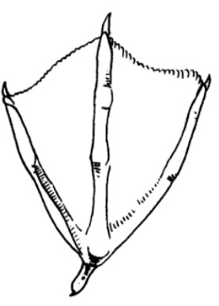

МНОГОФУНКЦИОНАЛЬНЫЙ ОБРАЗОВАТЕЛЬНЫЙ ЦЕНТР
"МУЗЕЙ ПРИРОДЫ АРКТИКИ"
СВИЯЗЬ Anas penelope
Внешний вид:
Свиязь – птица семейства утиных, с длиной тела 45-51 см, и массой около от 500 до 1100 г, размахом крыльев от 75 до 86 см. Эта птица обладает очень нарядным окрасом. Цвет оперения рыже-серый с пестринами. На теле утки есть большая отметина белого, золотого или желтого цвета. Находится она между клювом и затылком. С середины лета птица начинает линять и менять цвет оперения. Является обладательницей изумрудных перьев. Отличительной особенностью полового созревания самцов является появление белых пятен на крыльях. Старые особи не имеют таких пятен.
Питание:
Рацион свиязи разнообразен и зависит от времени года. В летний период она питается в основном водными растениями, водорослями, семенами, корнями водных растений, а также насекомыми, личинками и мелкими моллюсками. Свиязь часто кормится на поверхности воды или в мелководьях, где она собирает растения и водные семена с помощью своего клюва. В зимнее время, когда растительность ограничена, утка может питаться зерном, остатками пищи, оставшимися в сельскохозяйственных угодьях, а также ягодами и беспозвоночными, если они доступны.
Размножение:
Свиязь – моногамная птица, которая обычно гнездится в укромных местах на земле, в камышах или среди густой растительности на берегах водоемов. Гнездо строит самка, выбирая для этого место с хорошим укрытием и близко к воде. Оно состоит из травы, стеблей растений и перьев, которые самка использует для создания мягкой и теплой подстилки. Кладка состоит из 6-10 яиц, которые самка высиживает около 24-27 дней. Птенцы появляются вскоре после вылупления и сразу начинают следовать за матерью.
Распространение:
Свиязь обитает в Европе, Азии, частях Африки, на Ближнем Востоке и в Северной Америке. В северных районах она является перелетной птицей, мигрируя на зимовку в теплые регионы, такие как Средиземное море и Южную Африку. Миграция начинается в сентябре-октябре и продолжается до ноября, а возвращение происходит в марте-апреле. В южных районах свиязь может вести оседлый образ жизни. Эти птицы предпочитают пресные водоемы с обильной растительностью, такие как озера, реки и пруды, и часто встречаются в низменных местах с медленным течением воды. Свиязь — мигрирующий вид, который перемещается на большие расстояния в зимний период.
 
